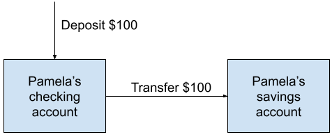
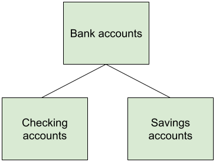

Our programs so far have consisted of functions intermixed with variables. This is a common way of writing programs when they are small and focused on computational functions, but as programs become larger and revolve more around data, Python programmers often use an approach known as object-oriented programming (OOP).
Object-oriented programming includes:
A way to describe a type of complex data, such as a bank account which has an associated account owner, a current balance, a history of deposits/withdrawals, etc.
A way to bundle together data with related functionality. For a bank account, it might need functions for withdrawing money, depositing money, closing the account, transferring between accounts, etc.
We can have multiple instances of each type of data, and we consider each of them to be an object. For example, my savings account could be one object and my checking account could be another object. Since they're both bank accounts, I could deposit and transfer into either of them.

There might be some functionality specific to savings accounts versus checking accounts, and object-oriented programming also gives us a way to declare that a particular type of object is similar to another type, but also differs in some ways.

As it turns out, we've been using objects this whole time: every piece of data in Python is an object of a particular type. Integers are type int, floating point numbers are type float, strings are type string, lists are type list, dictionaries are type dict. Each of the types have associated functionality (methods), and that's why we can call split() on any string object, or call pop() on any list object.
What we'll learn this unit is how we can declare our own types of objects, thanks to a mechanism called classes. Let's dive in!
{% endblock %}